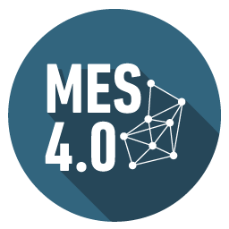

Manufacturing Execution System
Contexte Industriel
Le MES (Manufacturing Execution System) est un système informatique qui permet :
- 🔄 Le suivi en temps réel de la production
- 📈 L'analyse des performances machines
- ⚠️ La détection des anomalies de production
- 📊 La traçabilité complète des produits
Défi Technique
Voir
01
Machines Non Connectées
Machines sans interfaces numériques
Voir
02
Sécurité Réseau
Isolation réseau strictement nécessaire
Voir
03
Collecte données
Capteurs additionnels nécessaires
Le MES en Pratique
Connexion Machines
Intégration des machines anciennes via capteurs IoT autonomes
Modbus|Profibus
RS-485
Collecte Données
Stockage sécurisé des données de production
TimescaleDB
MQTT
Analyse Temps Réel
Visualisation des KPIs avec tableau de bord interactif
Grafana
React